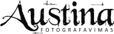
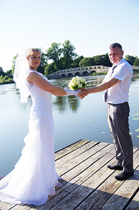
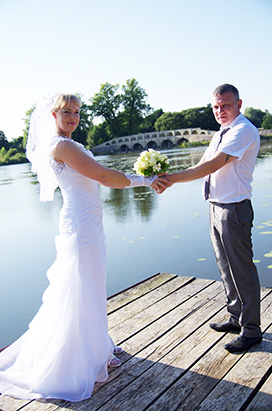

Vestuvės
Krikštynos
Asmeninės
Vestuvių fotografavimas iki 7 darbo valandų. Į paslaugą įeina:
- Susitikimas prieš vestuves, šventės aptarimas, konsultacija.
- Jaunosios išlydėjimo iš namų fotografavimas.
- Fotografavimas santuokų rūmuose, bažnyčioje.
- Fotosesija gamtoje ar Jūsų pasirinktoje vietoje.
- Fotografavimasis šventės vietoje su svečiais.
- Apie 200 skaitmeninių ir daugiau skaitmeninių (sutvarkytų) nuotraukų
- DVD diskas su visomis Vestuvių nuotraukomis tinkančioms spausdinimui bei peržiūrai;
- Autorinis viršelis;
Kaina:
120 Eurų (iki 7 darbo valandų), papildoma valanda 20 Eurų. Į šią kaina įskaičiuota kelionė iki 50 kilometrų. Esant ilgesnei kelionei apytiksliai 0,2 euro už papildomą kilometrą.
PAPILDOMAI GALITE UŽSISAKYTI:
- Filmukas iš gražiausių nuotraukų - 15 €
- Papildoma disko kopija - 2€;
Krikštynų fotografavimas:
- Konsultacija el.paštu ar telefonu - vietos, temos ir aprangos aptarimas
- Fotografavimas (ne ilgiau 2 valandų)- pasiruošimas, ceremonija ir fotosesija
- 70 ir daugiau skaitmeninių (sutvarkytų) nuotraukų;
- DVD diskas su visomis Krikštynų nuotraukomis tinkančioms spausdinimui bei peržiūrai;
- Autorinis viršelis.
Kaina:
50eurų, papildoma valanda 10eurų
PAPILDOMAI GALITE UŽSISAKYTI:
- Filmukas iš gražiausių nuotraukų - 15 €
- Papildoma disko kopija - 2€;
Asmeninių fotosesijų fotografavimas:
- Fotografavimas (1val.) + konsultacija el.paštu ar telefonu, dėl vietos, temos ir aprangos;
- 40 ir daugiau skaitmeninių (sutvarkytų) nuotraukų;
- Autorinis viršelis.
Kaina:
15-20eurų , papildomą valandą 7eurai.
PAPILDOMAI GALITE UŽSISAKYTI:
- Filmukas iš gražiausių nuotraukų - 15 €
- Papildoma disko kopija - 2€;

Apie mane

Vestuvės

Krikštynos

Fotosesijos

Kainoraštis

Filmukai

Esu fotografė Austina Kasperavičiūtė. Gimiau ir užaugau Šiauliuose. Mačiau kaip keičiasi miesto vietos, gamta, žmonės, gal todėl ir susidomėjau fotografija. Žinoma, didelę įtaką tam turėjo ir tėtis, kuris fotografuodavo juostiniu fotoaparatu ir įamžindavo šeimos akimirkas. Jis matydamas mano didžiulį norą sekti jo pėdomis leisdavo sugadinti ne vieną juostelę. Rezultatas netenkindavo manęs, (visada įsivaizduodavau, kad gausis gražiau ), tačiau nepaisant visko norėjau tobulėti.
Nusipirkau veidrodinį fotoaparatą, vėliau jį pakeitė profesionalus, galiausiai fotografuoju su Nikon D7100 ir patikimu objektyvu Nikon 24-70mm f/2.8, kuris leidžia greitai ir kokybiškai užfiksuoti norimas akimirkas.
Labiausiai mėgstu fotografuoti žmones, nes kiekviena asmenybė savita charakteriu, emocijomis, veido bruožais, pomėgiais ar kuo kitu. Nemėgstu vadovauti ir liepti ,,dabar atsistokite taip“ , galiu tik rekomenduoti arba pasiūlyti, jei matau, kad to reikia. Tačiau geriausi kadrai gaunasi savaime, eigoje, nepozuojant. Žinoma, yra žmonių, kurie teigia, jog bus gerai kai pafotografuos ,,fotografas“ su išmaniuoju telefonu arba ,,ai turim tokį fotoaparatą“ , tai įduosim jį kažkam, tačiau manau, kad kiekvienas kartais galime sau leisti tai padaryti fotografui ,jog vėliau netektų gailėtis jog neturite geros kokybės, atrinktų , gražių nuotraukų. Tą ir siūlau Jums!
Nors nesu profesionalė fotografė, tačiau žmonėms patinka kaip įamžinu jų šventes: vestuves, krikštynas, gimtadienius/jubiliejus, mergvakarius/bernvakarius ar tiesiog fotosesijas. Ieškote geriausio kokybės ir kainos santykio? Sveikinu, Jūsų paieškos baigėsi! Lauksiu Jūsų skambučio :)
 Plačiau
Suskleisti
Plačiau
Suskleisti


O tada:
- susitinkame
- susipažįstame
- peržiūrite mano darbus
- išdėstote pageidavimus
- išklausote pasiūlymus
- priimate sprendimą

 


Meniu
KasperStudio©2015